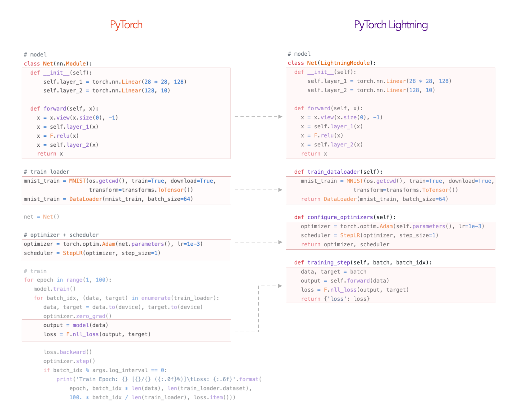

Pytorch Lighting 完全攻略
写在前面
Pytorch-Lightning这个库我“发现”过两次。第一次发现时，感觉它很重很难学，而且似乎自己也用不上。但是后面随着做的项目开始出现了一些稍微高阶的要求，我发现我总是不断地在相似工程代码上花费大量时间，Debug也是这些代码花的时间最多，而且渐渐产生了一个矛盾之处：如果想要更多更好的功能，如TensorBoard支持，Early Stop，LR Scheduler，分布式训练，快速测试等，代码就无可避免地变得越来越长，看起来也越来越乱，同时核心的训练逻辑也渐渐被这些工程代码盖过。那么有没有更好的解决方案，甚至能一键解决所有这些问题呢？
于是我第二次发现了Pytorch-Lightning。
真香。
但是问题还是来了。这个框架并没有因为香而变得更加易学。官网的教程很丰富，可以看出来开发者们在努力做了。但是很多相连的知识点都被分布在了不同的版块里，还有一些核心的理解要点并没有被强调出来，而是小字带过，这让我想做一个普惠的教程，包含所有我在学习过程中认为重要的概念，好用的参数，一些注意点、坑点，大量的示例代码段和一些核心问题的集中讲解。
最后，第三部分提供了一个我总结出来的易用于大型项目、容易迁移、易于复用的模板，有兴趣的可以去GitHub试用。
Crucial
-
Pytorch-Lighting 的一大特点是把模型和系统分开来看。模型是像Resnet18， RNN之类的纯模型， 而系统定义了一组模型如何相互交互，如GAN（生成器网络与判别器网络）、Seq2Seq（Encoder与Decoder网络）和Bert。同时，有时候问题只涉及一个模型，那么这个系统则可以是一个通用的系统，用于描述模型如何使用，并可以被复用到很多其他项目。
-
Pytorch-Lighting 的核心设计思想是“自给自足”。每个网络也同时包含了如何训练、如何测试、优化器定义等内容。

推荐使用方法
这一部分放在最前面，因为全文内容太长，如果放后面容易忽略掉这部分精华。
Pytorch-Lightning 是一个很好的库，或者说是pytorch的抽象和包装。它的好处是可复用性强，易维护，逻辑清晰等。缺点也很明显，这个包需要学习和理解的内容还是挺多的，或者换句话说，很重。如果直接按照官方的模板写代码，小型project还好，如果是大型项目，有复数个需要调试验证的模型和数据集，那就不太好办，甚至更加麻烦了。经过几天的摸索和调试，我总结出了下面这样一套好用的模板，也可以说是对Pytorch-Lightning的进一步抽象。
欢迎大家尝试这一套代码风格，如果用习惯的话还是相当方便复用的，也不容易半道退坑。
1 | root- |
如果对每个模型直接上plmodule，对于已有项目、别人的代码等的转换将相当耗时。另外，这样的话，你需要给每个模型都加上一些相似的代码，如training_step，validation_step。显然，这并不是我们想要的，如果真的这样做，不但不易于维护，反而可能会更加杂乱。同理，如果把每个数据集类都直接转换成pl的DataModule，也会面临相似的问题。基于这样的考量，我建议使用上述架构：
-
主目录下只放一个
main.py文件。 -
data和modle两个文件夹中放入__init__.py文件，做成包。这样方便导入。两个init文件分别是：from .data_interface import DInterfacefrom .model_interface import MInterface
-
在
data_interface中建立一个class DInterface(pl.LightningDataModule):用作所有数据集文件的接口。__init__()函数中import相应Dataset类，setup()进行实例化，并老老实实加入所需要的的train_dataloader,val_dataloader,test_dataloader函数。这些函数往往都是相似的，可以用几个输入args控制不同的部分。 -
同理，在
model_interface中建立class MInterface(pl.LightningModule):类，作为模型的中间接口。__init__()函数中import相应模型类，然后老老实实加入configure_optimizers,training_step,validation_step等函数，用一个接口类控制所有模型。不同部分使用输入参数控制。 -
main.py函数只负责：- 定义parser，添加parse项。
- 选好需要的
callback函数们。 - 实例化
MInterface,DInterface,Trainer。
完事。
Lightning Module
简介
-
三个核心组件：
- 模型
- 优化器
- Train/Val/Test步骤
-
数据流伪代码：
1
2
3
4
5outs = []
for batch in data:
out = training_step(batch)
outs.append(out)
training_epoch_end(outs)等价Lightning代码：
1
2
3
4
5
6
7def training_step(self, batch, batch_idx):
prediction = ...
return prediction
def training_epoch_end(self, training_step_outputs):
for prediction in predictions:
# do something with these我们需要做的，就是像填空一样，填这些函数。
组件与函数
-
一个Pytorch-Lighting 模型必须含有的部件是：
-
init: 初始化，包括模型和系统的定义。 -
training_step(self, batch, batch_idx): 即每个batch的处理函数。参数：
- batch (
Tensor| (Tensor, …) | [Tensor, …]) – The output of yourDataLoader. A tensor, tuple or list. - batch_idx (int) – Integer displaying index of this batch
- optimizer_idx (int) – When using multiple optimizers, this argument will also be present.
- hiddens (
Tensor) – Passed in iftruncated_bptt_steps> 0.
返回值：Any of.
Tensor- The loss tensordict- A dictionary. Can include any keys, but must include the key'loss'None- Training will skip to the next batch
返回值无论如何也需要有一个loss量。如果是字典，要有这个key。没loss这个batch就被跳过了。例：
1
2
3
4
5
6
7
8
9
10
11
12
13
14
15
16
17
18
19
20def training_step(self, batch, batch_idx):
x, y, z = batch
out = self.encoder(x)
loss = self.loss(out, x)
return loss
# Multiple optimizers (e.g.: GANs)
def training_step(self, batch, batch_idx, optimizer_idx):
if optimizer_idx == 0:
# do training_step with encoder
if optimizer_idx == 1:
# do training_step with decoder
# Truncated back-propagation through time
def training_step(self, batch, batch_idx, hiddens):
# hiddens are the hidden states from the previous truncated backprop step
...
out, hiddens = self.lstm(data, hiddens)
...
return {'loss': loss, 'hiddens': hiddens} - batch (
-
configure_optimizers: 优化器定义，返回一个优化器，或数个优化器，或两个List（优化器，Scheduler）。如：1
2
3
4
5
6
7
8
9
10
11
12
13
14
15
16
17
18
19
20
21
22
23
24
25
26
27
28
29
30
31
32
33
34
35
36
37
38# most cases
def configure_optimizers(self):
opt = Adam(self.parameters(), lr=1e-3)
return opt
# multiple optimizer case (e.g.: GAN)
def configure_optimizers(self):
generator_opt = Adam(self.model_gen.parameters(), lr=0.01)
disriminator_opt = Adam(self.model_disc.parameters(), lr=0.02)
return generator_opt, disriminator_opt
# example with learning rate schedulers
def configure_optimizers(self):
generator_opt = Adam(self.model_gen.parameters(), lr=0.01)
disriminator_opt = Adam(self.model_disc.parameters(), lr=0.02)
discriminator_sched = CosineAnnealing(discriminator_opt, T_max=10)
return [generator_opt, disriminator_opt], [discriminator_sched]
# example with step-based learning rate schedulers
def configure_optimizers(self):
gen_opt = Adam(self.model_gen.parameters(), lr=0.01)
dis_opt = Adam(self.model_disc.parameters(), lr=0.02)
gen_sched = {'scheduler': ExponentialLR(gen_opt, 0.99),
'interval': 'step'} # called after each training step
dis_sched = CosineAnnealing(discriminator_opt, T_max=10) # called every epoch
return [gen_opt, dis_opt], [gen_sched, dis_sched]
# example with optimizer frequencies
# see training procedure in `Improved Training of Wasserstein GANs`, Algorithm 1
# https://arxiv.org/abs/1704.00028
def configure_optimizers(self):
gen_opt = Adam(self.model_gen.parameters(), lr=0.01)
dis_opt = Adam(self.model_disc.parameters(), lr=0.02)
n_critic = 5
return (
{'optimizer': dis_opt, 'frequency': n_critic},
{'optimizer': gen_opt, 'frequency': 1}
)
-
-
可以指定的部件有：
forward: 和正常的nn.Module一样，用于inference。内部调用时：y=self(batch)training_step_end: 只在使用多个node进行训练且结果涉及如softmax之类需要全部输出联合运算的步骤时使用该函数。同理，validation_step_end/test_step_end。training_epoch_end:- 在一个训练epoch结尾处被调用。
- 输入参数：一个List，List的内容是前面
training_step()所返回的每次的内容。 - 返回：None
validation_step(self, batch, batch_idx)/test_step(self, batch, batch_idx):- 没有返回值限制，不一定非要输出一个
val_loss。
- 没有返回值限制，不一定非要输出一个
validation_epoch_end/test_epoch_end:
-
工具函数有：
-
freeze：冻结所有权重以供预测时候使用。仅当已经训练完成且后面只测试时使用。 -
print：尽管自带的print函数也可以使用，但如果程序运行在分布式系统时，会打印多次。而使用self.print()则只会打印一次。 -
log：像是TensorBoard等log记录器，对于每个log的标量，都会有一个相对应的横坐标，它可能是batch number或epoch number。而on_step就表示把这个log出去的量的横坐标表示为当前batch，而on_epoch则表示将log的量在整个epoch上进行累积后log，横坐标为当前epoch。LightningMoule Hook on_step on_epoch prog_bar logger training_step T F F T training_step_end T F F T training_epoch_end F T F T validation_step* F T F T validation_step_end* F T F T validation_epoch_end* F T F T *also applies to the test loop参数
- name (
str) – key name - value (
Any) – value name - prog_bar (
bool) – if True logs to the progress bar - logger (
bool) – if True logs to the logger - on_step (
Optional[bool]) – if True logs at this step. None auto-logs at the training_step but not validation/test_step - on_epoch (
Optional[bool]) – if True logs epoch accumulated metrics. None auto-logs at the val/test step but not training_step - reduce_fx (
Callable) – reduction function over step values for end of epoch. Torch.mean by default - tbptt_reduce_fx (
Callable) – function to reduce on truncated back prop - tbptt_pad_token (
int) – token to use for padding - enable_graph (
bool) – if True, will not auto detach the graph - sync_dist (
bool) – if True, reduces the metric across GPUs/TPUs - sync_dist_op (
Union[Any,str]) – the op to sync across GPUs/TPUs - sync_dist_group (
Optional[Any]) – the ddp group
- name (
-
log_dict：和log函数唯一的区别就是，name和value变量由一个字典替换。表示同时log多个值。如：1
2values = {'loss': loss, 'acc': acc, ..., 'metric_n': metric_n}
self.log_dict(values) -
save_hyperparameters：储存init中输入的所有超参。后续访问可以由self.hparams.argX方式进行。同时，超参表也会被存到文件中。
-
-
函数内建变量：
device：可以使用self.device来构建设备无关型tensor。如：z = torch.rand(2, 3, device=self.device)。hparams：含有所有前面存下来的输入超参。precision：精确度。常见32和16。
要点
- 如果准备使用DataParallel，在写
training_step的时候需要调用forward函数，z=self(x)
模板
1 | class LitModel(pl.LightningModule): |
Trainer
基础使用
1 | model = MyLightningModule() |
如果连validation_step都没有，那val_dataloader也就算了。
伪代码与hooks
1 | def fit(...): |
推荐参数
-
default_root_dir：默认存储地址。所有的实验变量和权重全部会被存到这个文件夹里面。推荐是，每个模型有一个独立的文件夹。每次重新训练会产生一个新的version_x子文件夹。 -
max_epochs：最大训练周期数。trainer = Trainer(max_epochs=1000) -
min_epochs：至少训练周期数。当有Early Stop时使用。 -
auto_scale_batch_size：在进行任何训练前自动选择合适的batch size。1
2
3
4
5
6
7
8# default used by the Trainer (no scaling of batch size)
trainer = Trainer(auto_scale_batch_size=None)
# run batch size scaling, result overrides hparams.batch_size
trainer = Trainer(auto_scale_batch_size='binsearch')
# call tune to find the batch size
trainer.tune(model) -
auto_select_gpus：自动选择合适的GPU。尤其是在有GPU处于独占模式时候，非常有用。 -
auto_lr_find：自动找到合适的初始学习率。使用了该论文的技术。当且仅当执行trainer.tune(model)代码时工作。1
2
3
4
5
6
7
8# run learning rate finder, results override hparams.learning_rate
trainer = Trainer(auto_lr_find=True)
# run learning rate finder, results override hparams.my_lr_arg
trainer = Trainer(auto_lr_find='my_lr_arg')
# call tune to find the lr
trainer.tune(model) -
precision：精确度。正常是32，使用16可以减小内存消耗，增大batch。1
2
3
4
5# default used by the Trainer
trainer = Trainer(precision=32)
# 16-bit precision
trainer = Trainer(precision=16, gpus=1) -
val_check_interval：进行Validation测试的周期。正常为1，训练1个epoch测试4次是0.25，每1000 batch测试一次是1000。- use (float) to check within a training epoch：此时这个值为一个epoch的百分比。每百分之多少测试一次。
- use (int) to check every n steps (batches)：每多少个batch测试一次。
1
2
3
4
5
6
7
8
9
10# default used by the Trainer
trainer = Trainer(val_check_interval=1.0)
# check validation set 4 times during a training epoch
trainer = Trainer(val_check_interval=0.25)
# check validation set every 1000 training batches
# use this when using iterableDataset and your dataset has no length
# (ie: production cases with streaming data)
trainer = Trainer(val_check_interval=1000) -
gpus：控制使用的GPU数。当设定为None时，使用cpu。1
2
3
4
5
6
7
8
9
10
11
12
13
14
15
16
17
18
19
20
21
22
23# default used by the Trainer (ie: train on CPU)
trainer = Trainer(gpus=None)
# equivalent
trainer = Trainer(gpus=0)
# int: train on 2 gpus
trainer = Trainer(gpus=2)
# list: train on GPUs 1, 4 (by bus ordering)
trainer = Trainer(gpus=[1, 4])
trainer = Trainer(gpus='1, 4') # equivalent
# -1: train on all gpus
trainer = Trainer(gpus=-1)
trainer = Trainer(gpus='-1') # equivalent
# combine with num_nodes to train on multiple GPUs across nodes
# uses 8 gpus in total
trainer = Trainer(gpus=2, num_nodes=4)
# train only on GPUs 1 and 4 across nodes
trainer = Trainer(gpus=[1, 4], num_nodes=4) -
limit_train_batches：使用训练数据的百分比。如果数据过多，或正在调试，可以使用这个。值的范围为0~1。同样，有limit_test_batches，limit_val_batches。1
2
3
4
5
6
7
8# default used by the Trainer
trainer = Trainer(limit_train_batches=1.0)
# run through only 25% of the training set each epoch
trainer = Trainer(limit_train_batches=0.25)
# run through only 10 batches of the training set each epoch
trainer = Trainer(limit_train_batches=10) -
fast_dev_run：bool量。如果设定为true，会只执行一个batch的train, val 和 test，然后结束。仅用于debug。Setting this argument will disable tuner, checkpoint callbacks, early stopping callbacks, loggers and logger callbacks like
LearningRateLoggerand runs for only 1 epoch1
2
3
4
5
6
7
8# default used by the Trainer
trainer = Trainer(fast_dev_run=False)
# runs 1 train, val, test batch and program ends
trainer = Trainer(fast_dev_run=True)
# runs 7 train, val, test batches and program ends
trainer = Trainer(fast_dev_run=7)
.fit()函数
Trainer.fit(model, train_dataloader=None, val_dataloaders=None, datamodule=None)：输入第一个量一定是model，然后可以跟一个LigntningDataModule或一个普通的Train DataLoader。如果定义了Val step，也要有Val DataLoader。
参数
- datamodule (
Optional[LightningDataModule]) – A instance ofLightningDataModule.- model (
LightningModule) – Model to fit.- train_dataloader (
Optional[DataLoader]) – A Pytorch DataLoader with training samples. If the model has a predefined train_dataloader method this will be skipped.- val_dataloaders (
Union[DataLoader,List[DataLoader],None]) – Either a single Pytorch Dataloader or a list of them, specifying validation samples. If the model has a predefined val_dataloaders method this will be skipped
其他要点
.test()若非直接调用，不会运行。trainer.test().test()会自动load最优模型。model.eval()andtorch.no_grad()在进行测试时会被自动调用。- 默认情况下，
Trainer()运行于CPU上。
使用样例
- 手动添加命令行参数：
1 | from argparse import ArgumentParser |
- 自动添加所有
Trainer会用到的命令行参数：
1 | from argparse import ArgumentParser |
- 混合式，既使用
Trainer相关参数，又使用一些自定义参数，如各种模型超参：
1 | from argparse import ArgumentParser |
所有参数
Trainer.``__init__(logger=True, checkpoint_callback=True, callbacks=None, default_root_dir=None, gradient_clip_val=0, process_position=0, num_nodes=1, num_processes=1, gpus=None, auto_select_gpus=False, tpu_cores=None, log_gpu_memory=None, progress_bar_refresh_rate=None, overfit_batches=0.0, track_grad_norm=- 1, check_val_every_n_epoch=1, fast_dev_run=False, accumulate_grad_batches=1, max_epochs=None, min_epochs=None, max_steps=None, min_steps=None, limit_train_batches=1.0, limit_val_batches=1.0, limit_test_batches=1.0, limit_predict_batches=1.0, val_check_interval=1.0, flush_logs_every_n_steps=100, log_every_n_steps=50, accelerator=None, sync_batchnorm=False, precision=32, weights_summary=‘top’, weights_save_path=None, num_sanity_val_steps=2, truncated_bptt_steps=None, resume_from_checkpoint=None, profiler=None, benchmark=False, deterministic=False, reload_dataloaders_every_epoch=False, auto_lr_find=False, replace_sampler_ddp=True, terminate_on_nan=False, auto_scale_batch_size=False, prepare_data_per_node=True, plugins=None, amp_backend=‘native’, amp_level=‘O2’, distributed_backend=None, move_metrics_to_cpu=False, multiple_trainloader_mode=‘max_size_cycle’, stochastic_weight_avg=False)
Log和return loss到底在做什么
To add a training loop use the training_step method
1 | class LitClassifier(pl.LightningModule): |
- 无论是
training_step，还是validation_step，test_step返回值都是loss。返回的loss会被用一个list收集起来。
Under the hood, Lightning does the following (pseudocode):
1 | # put model in train mode |
Training epoch-level metrics
If you want to calculate epoch-level metrics and log them, use the .log method
1 | def training_step(self, batch, batch_idx): |
- 如果在
x_step函数中使用了.log()函数，那么这个量将会被逐步记录下来。每一个log出去的变量都会被记录下来，每一个step会集中生成一个字典dict，而每个epoch都会把这些字典收集起来，形成一个字典的list。
The .log object automatically reduces the requested metrics across the full epoch. Here’s the pseudocode of what it does under the hood:
1 | outs = [] |
Train epoch-level operations
If you need to do something with all the outputs of each training_step, override training_epoch_end yourself.
1 | def training_step(self, batch, batch_idx): |
The matching pseudocode is:
1 | outs = [] |
DataModule
介绍
-
首先，这个
DataModule和之前写的Dataset完全不冲突。前者是后者的一个包装，并且这个包装可以被用于多个torch Dataset 中。在我看来，其最大的作用就是把各种train/val/test划分、DataLoader初始化之类的重复代码通过包装类的方式得以被简单的复用。 -
具体作用项目：
- Download instructions：下载
- Processing instructions：处理
- Split instructions：分割
- Train dataloader：训练集Dataloader
- Val dataloader(s)：验证集Dataloader
- Test dataloader(s)：测试集Dataloader
-
其次，
pl.LightningDataModule相当于一个功能加强版的torch Dataset，加强的功能包括：prepare_data(self)：- 最最开始的时候，进行一些无论GPU有多少只要执行一次的操作，如写入磁盘的下载操作、分词操作(tokenize)等。
- 这里是一劳永逸式准备数据的函数。
- 由于只在单线程中调用，不要在这个函数中进行
self.x=y似的赋值操作。 - 但如果是自己用而不是给大众分发的话，这个函数可能并不需要调用，因为数据提前处理好就好了。
setup(self, stage=None)：- 实例化数据集（Dataset），并进行相关操作，如：清点类数，划分train/val/test集合等。
- 参数
stage用于指示是处于训练周期(fit)还是测试周期(test)，其中，fit周期需要构建train和val两者的数据集。 - setup函数不需要返回值。初始化好的train/val/test set直接赋值给self即可。
train_dataloader/val_dataloader/test_dataloader：- 初始化
DataLoader。 - 返回一个DataLoader量。
- 初始化
示例
1 | class MNISTDataModule(pl.LightningDataModule): |
要点
- 若在DataModule中定义了一个
self.dims变量，后面可以调用dm.size()获取该变量。
Saving and Loading
Saving
-
ModelCheckpoint: 自动储存的callback module。默认情况下training过程中只会自动储存最新的模型与相关参数，而用户可以通过这个module自定义。如观测一个
val_loss的量，并储存top 3好的模型，且同时储存最后一个epoch的模型，等等。例：1
2
3
4
5
6
7
8
9
10
11
12from pytorch_lightning.callbacks import ModelCheckpoint
# saves a file like: my/path/sample-mnist-epoch=02-val_loss=0.32.ckpt
checkpoint_callback = ModelCheckpoint(
monitor='val_loss',
filename='sample-mnist-{epoch:02d}-{val_loss:.2f}',
save_top_k=3,
mode='min',
save_last=True
)
trainer = pl.Trainer(gpus=1, max_epochs=3, progress_bar_refresh_rate=20, callbacks=[checkpoint_callback]) -
另外，也可以手动存储checkpoint:
trainer.save_checkpoint("example.ckpt") -
ModelCheckpointCallback中，如果save_weights_only =True，那么将会只储存模型的权重（相当于model.save_weights(filepath)），反之会储存整个模型（相当于model.save(filepath)）。
Loading
-
load一个模型，包括它的weights、biases和超参数：
1
2
3
4
5
6
7model = MyLightingModule.load_from_checkpoint(PATH)
print(model.learning_rate)
# prints the learning_rate you used in this checkpoint
model.eval()
y_hat = model(x) -
load模型时替换一些超参数：
1
2
3
4
5
6
7
8
9
10
11
12
13
14
15
16class LitModel(LightningModule):
def __init__(self, in_dim, out_dim):
super().__init__()
self.save_hyperparameters()
self.l1 = nn.Linear(self.hparams.in_dim, self.hparams.out_dim)
# if you train and save the model like this it will use these values when loading
# the weights. But you can overwrite this
LitModel(in_dim=32, out_dim=10)
# uses in_dim=32, out_dim=10
model = LitModel.load_from_checkpoint(PATH)
# uses in_dim=128, out_dim=10
model = LitModel.load_from_checkpoint(PATH, in_dim=128, out_dim=10) -
完全load训练状态：load包括模型的一切，以及和训练相关的一切参数，如
model, epoch, step, LR schedulers, apex等1
2
3
4
5model = LitModel()
trainer = Trainer(resume_from_checkpoint='some/path/to/my_checkpoint.ckpt')
# automatically restores model, epoch, step, LR schedulers, apex, etc...
trainer.fit(model)
Callbacks
- Callback 是一个自包含的程序，可以与训练流程交织在一起，而不会污染主要的研究逻辑。
- Callback 并非只会在epoch结尾调用。pytorch-lightning 提供了数十个hook（接口，调用位置）可供选择，也可以自定义callback，实现任何想实现的模块。
- 推荐使用方式是，随问题和项目变化的操作，这些函数写到lightning module里面，而相对独立，相对辅助性的，需要复用的内容则可以定义单独的模块，供后续方便地插拔使用。
Callbacks推荐
-
EarlyStopping(monitor='early_stop_on', min_delta=0.0, patience=3, verbose=False, mode='min', strict=True)：根据某个值，在数个epoch没有提升的情况下提前停止训练。参数：
- monitor (
str) – quantity to be monitored. Default:'early_stop_on'. - min_delta (
float) – minimum change in the monitored quantity to qualify as an improvement, i.e. an absolute change of less than min_delta, will count as no improvement. Default:0.0. - patience (
int) – number of validation epochs with no improvement after which training will be stopped. Default:3. - verbose (
bool) – verbosity mode. Default:False. - mode (
str) – one of'min','max'. In'min'mode, training will stop when the quantity monitored has stopped decreasing and in'max'mode it will stop when the quantity monitored has stopped increasing. - strict (
bool) – whether to crash the training if monitor is not found in the validation metrics. Default:True.
示例：
1
2
3
4
5from pytorch_lightning import Trainer
from pytorch_lightning.callbacks import EarlyStopping
early_stopping = EarlyStopping('val_loss')
trainer = Trainer(callbacks=[early_stopping]) - monitor (
-
ModelCheckpoint：见上文Saving and Loading. -
PrintTableMetricsCallback：在每个epoch结束后打印一份结果整理表格。1
2
3
4
5
6
7
8
9
10
11
12
13from pl_bolts.callbacks import PrintTableMetricsCallback
callback = PrintTableMetricsCallback()
trainer = pl.Trainer(callbacks=[callback])
trainer.fit(...)
# ------------------------------
# at the end of every epoch it will print
# ------------------------------
# loss│train_loss│val_loss│epoch
# ──────────────────────────────
# 2.2541470527648926│2.2541470527648926│2.2158432006835938│0
Logging
-
Logging：Logger默认是TensorBoard，但可以指定各种主流Logger框架，如Comet.ml，MLflow，Netpune，或直接CSV文件。可以同时使用复数个logger。
1
2
3
4
5
6
7
8
9
10
11
12
13
14
15
16
17
18
19
20
21
22
23
24from pytorch_lightning import loggers as pl_loggers
# Default
tb_logger = pl_loggers.TensorBoardLogger(
save_dir=os.getcwd(),
version=None,
name='lightning_logs'
)
trainer = Trainer(logger=tb_logger)
# Or use the same format as others
tb_logger = pl_loggers.TensorBoardLogger('logs/')
# One Logger
comet_logger = pl_loggers.CometLogger(save_dir='logs/')
trainer = Trainer(logger=comet_logger)
# Save code snapshot
logger = pl_loggers.TestTubeLogger('logs/', create_git_tag=True)
# Multiple Logger
tb_logger = pl_loggers.TensorBoardLogger('logs/')
comet_logger = pl_loggers.CometLogger(save_dir='logs/')
trainer = Trainer(logger=[tb_logger, comet_logger])默认情况下，每50个batch log一次，可以通过调整参数
-
如果想要log输出非scalar（标量）的内容，如图片，文本，直方图等等，可以直接调用
self.logger.experiment.add_xxx()来实现所需操作。1
2
3
4
5
6
7def training_step(...):
...
# the logger you used (in this case tensorboard)
tensorboard = self.logger.experiment
tensorboard.add_image()
tensorboard.add_histogram(...)
tensorboard.add_figure(...) -
使用log：如果是TensorBoard，那么：
tensorboard --logdir ./lightning_logs。在Jupyter Notebook中，可以使用：1
2
3# Start tensorboard.
%load_ext tensorboard
%tensorboard --logdir lightning_logs/在行内打开TensorBoard。
-
小技巧：如果在局域网内开启了TensorBoard，加上flag
--bind_all即可使用主机名访问：tensorboard --logdir lightning_logs --bind_all->http://SERVER-NAME:6006/
同时使用TensorBoard和CSV Logger
如果同时使用两个Logger，PL会有睿智操作：如果保存根目录相同，他们会依次建立两个version文件夹，令人窒息。
1 | from pytorch_lightning.loggers import TensorBoardLogger, CSVLogger |
Transfer Learning
1 | import torchvision.models as models |
关于device操作
LightningModules know what device they are on! Construct tensors on the device directly to avoid CPU->Device transfer.
1 | # bad |
For tensors that need to be model attributes, it is best practice to register them as buffers in the modules’s __init__ method:
1 | # bad |
前面两段是教程中的文本。然而实际上有一个暗坑：
如果你使用了一个中继的pl.LightningModule，而这个module里面实例化了某个普通的nn.Module，而这个模型中又需要内部生成一些tensor，比如图片每个通道的mean，std之类，那么如果你从pl.LightningModule中pass一个self.device，实际上在一开始这个self.device永远是cpu。所以如果你在调用的nn.Module的__init__()中初始化，使用to(device)或干脆什么都不用，结果就是它永远都在cpu上。
但是，经过实验，虽然pl.LightningModule在__init__()阶段self.device还是cpu，当进入了training_step()之后，就迅速变为了cuda。所以，对于子模块，最佳方案是，使用一个forward中传入的量，如x，作为一个reference变量，用type_as函数将在模型中生成的tensor都放到和这个参考变量相同的device上即可。
1 | class RDNFuse(nn.Module): |
关于limit_train_batches选项
这里涉及到一个问题，就是每个epoch使用部分数据而非全部时，程序将会怎么工作。
The shuffling happens when the iterator is created. In the case of the for loop, that happens just before the for loop starts. You can create the iterator manually with:
1 | # Iterator gets created, the data has been shuffled at this point. |
By default the data loader uses
torch.utils.data.RandomSamplerif you setshuffle=True(without providing your own sampler). Its implementation is very straight forward and you can see where the data is shuffled when the iterator is created by looking at theRandomSampler.__iter__method:
1 | def __iter__(self): |
The return statement is the important part, where the shuffling takes place. It simply creates a random permutation of the indices.
That means you will see your entire dataset every time you fully consume the iterator, just in a different order every time. Therefore there is no data lost (not including cases with
drop_last=True) and your model will see all data at every epoch.
总结下来，如果使用了shuffle=True选项，那么即使每次都不跑完整个epoch，你还是有机会见到所有的数据的。数据集的shuffle发生在iter被创建的时候，在我们一般的代码中，也就是内层for循环开始时。但如果你没有选择shuffle=True，那你将永远只能看到你设定的前面N个数据。
Points
-
pl.seed_everything(1234)：对所有相关的随机量固定种子。 -
使用LR Scheduler时候，不用自己
.step()。它也被Trainer自动处理了。Optimization 主页面1
2
3
4
5
6
7
8
9
10
11
12
13
14
15
16
17
18
19
20
21# Single optimizer
for epoch in epochs:
for batch in data:
loss = model.training_step(batch, batch_idx, ...)
loss.backward()
optimizer.step()
optimizer.zero_grad()
for scheduler in schedulers:
scheduler.step()
# Multiple optimizers
for epoch in epochs:
for batch in data:
for opt in optimizers:
disable_grads_for_other_optimizers()
train_step(opt)
opt.step()
for scheduler in schedulers:
scheduler.step() -
关于划分train和val集合的方法。与PL无关，但很常用，两个例子：
random_split(range(10), [3, 7], generator=torch.Generator().manual_seed(42))- 如下：
1
2
3
4
5from torch.utils.data import DataLoader, random_split
from torchvision.datasets import MNIST
mnist_full = MNIST(self.data_dir, train=True, transform=self.transform)
self.mnist_train, self.mnist_val = random_split(mnist_full, [55000, 5000])Parameters：
-
如果使用了
PrintTableMetricsCallback，那么validation_step不要return内容，否则会炸。